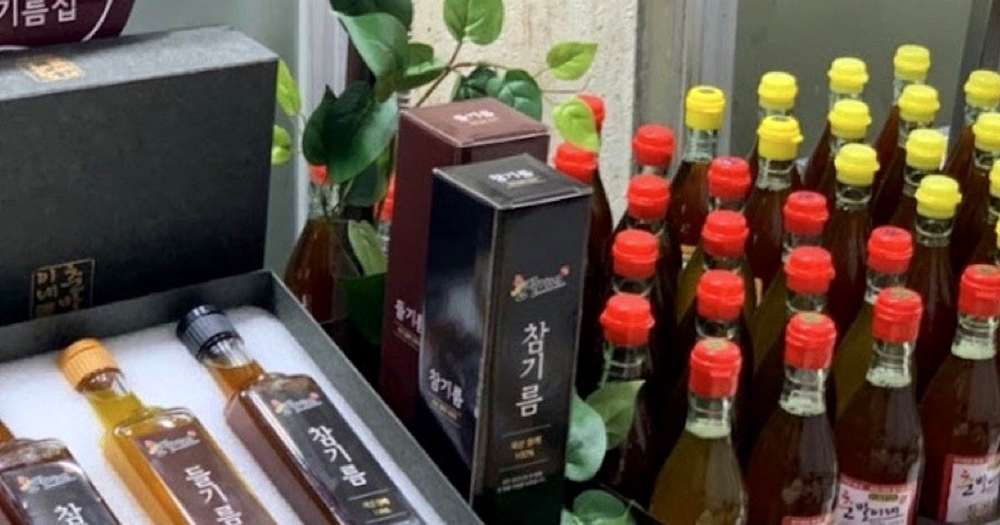

대덕 & 제천기름집
1975년부터 3대째, 모란시장 백년기름 특화거리에서 전통 방식 그대로 볶고 짜는 참기름·들기름입니다.

말 단위는 가게로 문의해 주세요.
돌·결혼 답례품, 행사 답례품, 설·추석 선물
참기름 직사광선을 피해 상온(15~25°C)에 두세요.
들기름 짙은 색 병에 담아 냉장(0~10°C) 보관하세요. 공기나 물기에 닿으면 빨리 상해요.
바닥에 가라앉은 침전물은 전통 방식으로 짠 표시예요. 흔들어 드시면 더 부드럽고 고소해요.